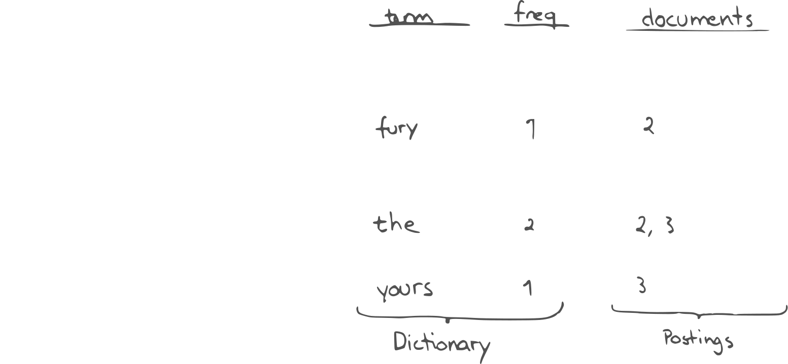
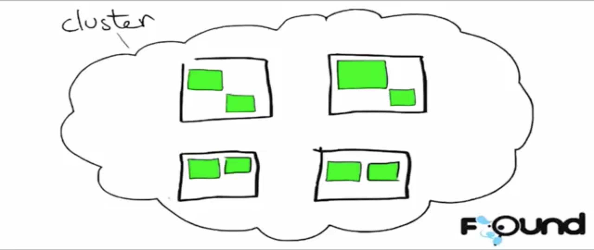
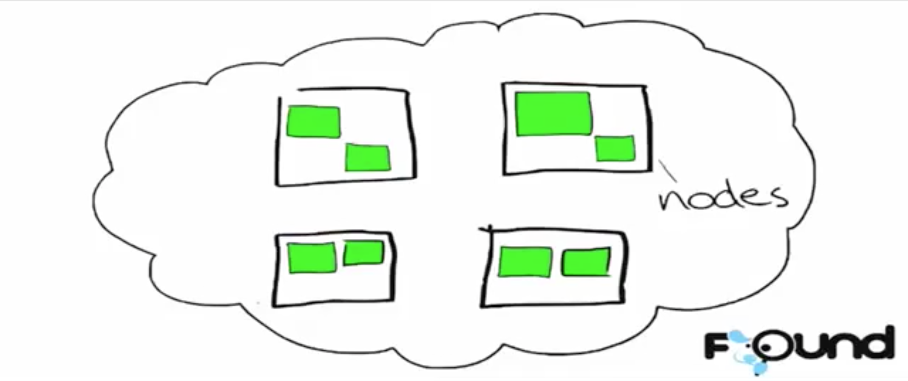
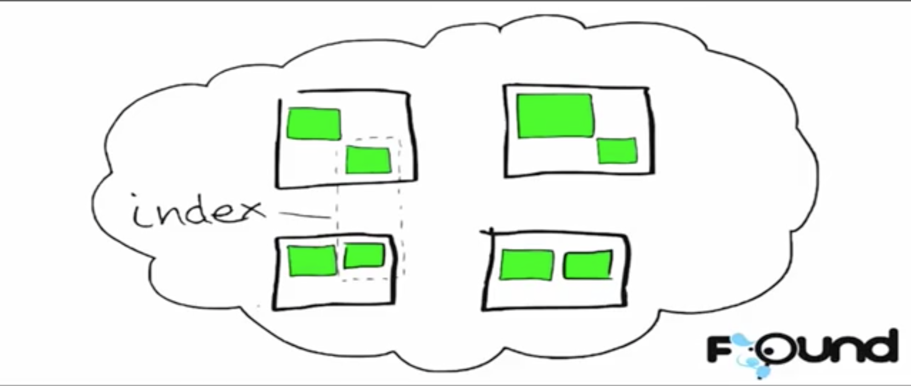
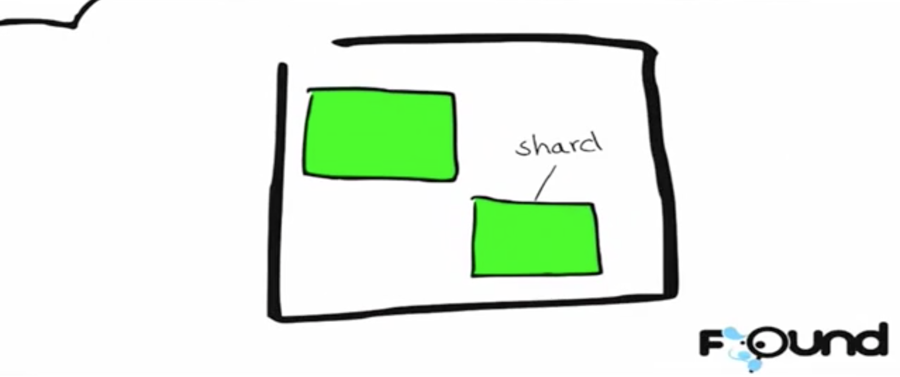
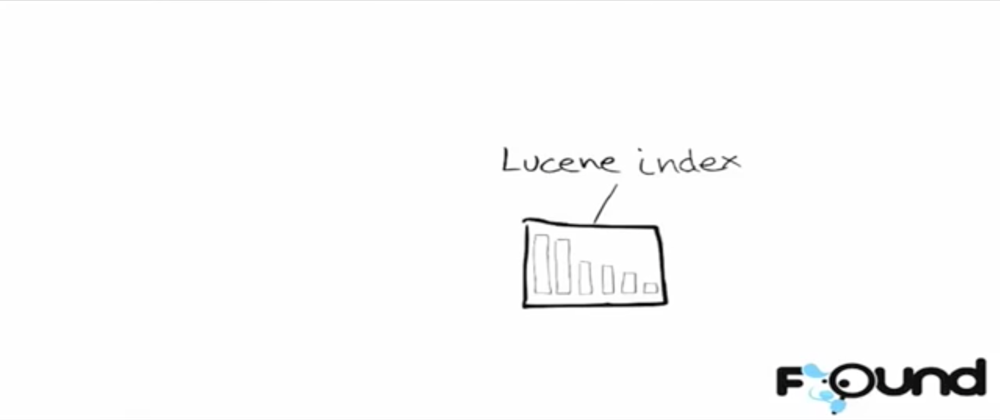
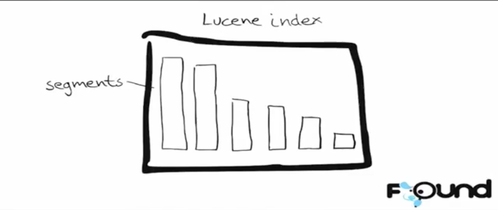

The Inverted Index

Note: This is a huge topic so we will only be able to scratch the surface in this talk. Much of the info comes from Elasticsearch: The Definitive Guide. Give it a read!
A distributed search engine combining full text search, structured search and analytics.
A Java application server exposing a RESTful JSON API over HTTP.
Blazingly fast.
In Elasticsearch, a document belongs to a type, and those types live inside an index.
MySQL => Databases => Tables => Columns/Rows
Elasticsearch => Indices => Types => Documents with Properties
curl -XPUT 'http://localhost:9200/gb/tweet/13?pretty=1' -d '
{
"date" : "2014-09-23",
"name" : "Mary Jones",
"tweet" : "So yes, I am an Elasticsearch fanboy",
"user_id" : 2
}
'curl -XGET 'http://localhost:9200/_search'
{
"hits" : {
"total" : 1,
"hits" : [
{
"_index": "gb",
"_type": "tweet",
"_id": "1",
"_score": 1,
"_source": {
"date" : "2014-09-23",
"name" : "Mary Jones",
"tweet" : "So yes, I am an Elasticsearch fanboy",
"user_id" : 2
}
}
]
}
"took" : 4,
"_shards" : {
"failed" : 0,
"successful" : 10,
"total" : 10
},
"timed_out" : false
}

A Mapping tells Elasticsearch what data type each field is expected to be, and what Analyzers to use. Analogous to a schema.
An Analyzer determines how the text of a particular field will be processed before being indexed. It consists of three steps:
Character filters => Tokenizers => Token filters
Note: The same analysis steps are applied to the query when you query a full-text field.
{
"query": {
"bool": {
"must": { "match": { "email": "business opportunity" }},
"should": [
{ "match": { "starred": true }},
{ "bool": {
"must": { "folder": "inbox" }},
"must_not": { "spam": true }}
}}
],
"minimum_should_match": 1
}
}
}A filter asks a yes/no question of every document and is used for fields that contain exact values:
created date in the range 2013 - 2014?status field contain the term published?lat_lon field within 10km of a specified point?A query is similar to a filter, but also asks the question: How well does this document match? A typical use for a query is to find documents:
full text search.run, but maybe also matching runs, running, jog, or sprint.quick, brown, and fox — the closer together they are, the more relevant the document.lucene, search, or java — the more tags, the more relevant the document.As a general rule, use query clauses for full-text search or for any condition that should affect the relevance score, and use filter clauses for everything else.
Aggregations allow us to group and calculate statistics on the data in an index.
https://github.com/danpaz/elasticsearch-talk/
Images from Alex Brasetvik's talk: Elasticsearch From The Bottom Up
https://www.elastic.co/videos/elasticsearch-from-the-bottom-up





A segment is like a mini index. Each segment contains an inverted index.

Searches are executed on all segments, and results are merged before sending back to the client.
source words, indexed using analyzers to great effect!date_histogram and terms for the dashboard.regex aggregations.